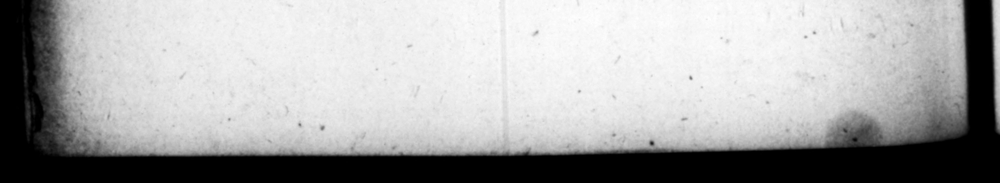

9 dicendo facultatis, cauſas induſtrie actitavit. Uxores habuit Mummi am Achaicam, neprem Catuli, proneptem L. ummii, qui Corinthum exeidit, item Liviam Ocellinam, ditem admodum & pulcrani, à qua tamen nobilitatis cauſa apperitus ultro exiſtimatur, & aliquanto enixius, poſtquam ſubinde inſtanti vitium corporis ſecreto poſita veſte detexit, ne quaſi ignaram fallere videretur. Ex Achaica liberos, Cajum & Sergium procrea vit. Cajus attritis facultatibus urbe crſſit: prohibicuſque A Tiberio ſurtiri anno ſuo proconſulatum, voluntaria morte obiit. % d '8U'ET. TRAN M Quorum major ſbe 3 = : he made in th. gevernment. Fr by roſe no higher than the pretorſbip, but publiſbed a large and a curious 7225 His father attained #6. the conſul} being a very low man and — = ed withall, but a tolerable drator, and an induſtrious pleader.. His "wing were Mumia Achaica, grand-daugh ter of Catulus, and great-grand-daughter of L. Munumius, who d:ſtroyed rinth, and Livia Ocel/ins 4 very tich and beautiful lady, by whom it vs Jup*d be was cour:ed for the ; 75 deſcent, and the more Jo, fo [tripping off bis tega in private, aud wing her the deformity of hi perſon upon ber preſſing him with 4 727527 marriage, which he did thas me mig not be thought to impoſe upon' her. "Be had by Achaica two ſons, Caius and Sergius, The elder whereof Catus, bavin very much reduced his eftate retired from town, and bring not ſuffered by Tiber/s to take bis chance for the pro-conſulſbip in bis year, pus an end 7 N Iba Imperat — ius Galba Cr M. Valerio Meſlalk Cn. Lentulo COSS. narus eſt, 1x Kalendas Januarii, in villa colli ſuperpolita, prope Terracinam _ ſiniftrorſfum Fundos petentibus. Adoptatus à noverca ſua, Livii nomen, & Ocellæ cognomen aſlumſit, mutato prænomine. Nam & Lucium mox pro Sergio uſque ad temus imperii uſurpavit. Cont Auguſtum puero adhuc ſalutanti ſe inter æquales, a prehenſa buccula dixiſſe, x63 e rien 75s dd ny Tapereuwy. Sed & iberius, cum comperiſſer imperaturum eum, verum in ſenecta, Vivat ſane, ait, quando id ad nos nibil pertinet. Avo quoque ejus fulgur procuranti, cum exta de manibus _* aquila rapuiſſet,, & in frugiferam quercum contuliſſet, ſummum fed ſerum imperium tendi familiz reſpunſam eſt, Et ille irridens, Sane, inguit, cum mula pepererit, Nihil æque poltea Galbam 4. The Emperor Sergius Gal ia was born in the conſulſhip of M. Yalerins Mi} ſalla, and Cn, Lentulus, upon the ninth of the Calends of January in a country hauſe upon A hill, near Terracina, en the left ſide of the road to Fundi, Bet adopted by his ſtep- mot her, he aſſu the name of Livia, with the cognomen of Ocella, and a new prenomen, for after that he made uſe of that of Luci inſtead of Sergius, till he came te be Emperor. It's well known that Aug tus, when he came once amongſt ot boys of the ſame age with himſelf to his reſpett to him, took him the cheek, and ſaid, and tu ch too will cait of our imperial dignity. Tiberius too being told that be come to be Emperor, but in an adva age, ſaid upon it, let him live then, ſince that concerns not me at all, And when his grand fat her was offering ſacrifice, to avert ſome ill men from hghtening, the entrai's of the An were ſnatch'd out if his hand by an re | Eagle, and carrie1 off into an 0a loaded with ackorns : Upon which South. ſayers ſaid, the family would come to be maſters of th: Empire, be it would be a long time firſt ; at he ſmiling ſaid, ay when a mule ha
